SONIDO·LUZ·EVENTOS
+34 603 62 14 19Alquiler de sonido
Ordenar


BRONZE

SILVER

GOLD

PLATINUM


BIG BOSS
* En esta categoría puedes ver la oferta de alquiler de kits. Los kits están diseñados en función del presupuesto y el tamaño del evento, pero NO están limitados en posiciones. Nuestros gerentes lo ayudarán en la selección de equipos según sus deseos y preferencias.
El alquiler de equipos de sonido e iluminación es la mejor solución si está planeando un evento en el que actuarán artistas y músicos. Cada cliente puede contar con el hecho de que los especialistas no solo entregarán el equipo, sino que lo colocarán en el sitio y lo conectarán.El arsenal de la compañía incluye solo los equipos de sonido más modernos fabricados por marcas reconocidas.
Te ayudaremos a elegir la mejor opción para cualquier evento, desde una pequeña fiesta amistosa, aniversario hasta un concierto de gala, festival.
Ventajas de alquilar sonido y luz es que no tienes que seleccionar tú mismo el equipo necesario, busca especialistas que puedan conectarlo. Solo necesita explicar a los gerentes qué evento requiere el alquiler de equipos, y nuestros profesionales seleccionarán la mejor solución, desde micrófonos, mesas de mezclas, amplificadores y sistemas acústicos.
Más...La música de alta calidad es una parte integral de cualquier fiesta. Incluso los pequeños eventos y presentaciones requieren un equipo de audio profesional. Esto se debe a que a nadie le gusta el sonido de un equipo averiado o un estruendo que puede estropear la impresión general incluso del evento más grandioso. Prepárese rápida y eficientemente para el próximo evento. Alquilamos los últimos equipos de sonido de ALTA GAMA en Marbella y en toda la Costa del Sol, asegurando que su evento sea ruidoso, con melodías y voces claras. Nos especializamos en el soporte técnico para eventos, y el alquiler de sonido es una de nuestras especialidades. Cuando nuestros especialistas llegan al sitio, traen todo el equipo necesario y rápidamente lo instalan y lo preparan para el trabajo. Con nuestra ayuda, puede crear un ambiente brillante, enérgico y festivo para su fiesta, que será recordado por todos los participantes!


 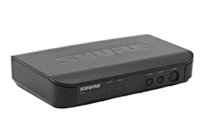
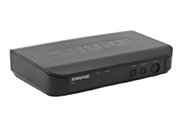


Características principales Gama de frecuencias de funcionamiento inalámbrico de 863MHz a 865MHz Micrófono Beta 58 de primera calidad en un paquete inalámbrico fácil de usar Quickscan de un solo toque encuentra la mejor frecuencia para obtener una señal clara e ininterrumpida 14 horas de funcionamiento y un alcance de 100 metros con un par de pilas AA Hasta 12 sistemas compatibles por banda de frecuencia El BLX24E/B58-T11 es un sistema de micrófono de mano inalámbrico que ofrece toda la calidad que espera de Shure. Han tomado uno de los micrófonos más venerados de la música live y lo han hecho inalámbrico. Gran sonido. Una construcción resistente a las giras. Pero ahora es realmente libre cuando actúa. Construidos para garantizar una señal sólida como una roca desde el transmisor hasta el receptor, los sistemas inalámbricos Shure BLX eliminan las caídas y las interferencias. Sonará como si estuviera usando un micrófono con cable. Y gracias a la tecnología Quickscan de un solo toque, todo el trabajo duro se hace por usted. Localizar la mejor frecuencia para su actuación es tan fácil como pulsar un botón. Sin pruebas y errores. Sin configuraciones complicadas. Sólo una pulsación.
Ordenar

 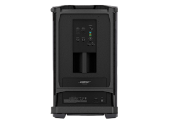
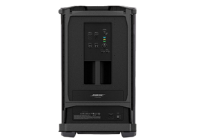

BOSE F1 KIT COMPLETO 2X BOSE F1 MODEL 812 El altavoz Bose F1 Model 812 es el primer altavoz autoamplificado portátil que le permite controlar su patrón de cobertura vertical. No importa en qué sala esté, que tendrá la cobertura adecuada. Sistema de PA principal para bandas, DJs y eventos. 1000W Full Range. Control vertical flexible con 100º de cobertura horizontal. Su array flexible permite seleccionar entre 4 patrones de cobertura. Un woofer de 12" y ocho drivers de 2,25". Tecnología FLEX Array. Diseño de bafle flexible que se puede configurar en cuatro formas únicas para elegir el mejor patrón de cobertura posible para la aplicación. Line array de medios/agudos con 8 drivers verticalmente orientados. Cada driver está montado en una guía de ondas personalizada de 100º que ayuda a ofrecer una cobertura amplia y coherente. Driver LF de alto rendimiento de 12" que proporciona una fuerte salida de baja frecuencia. Diseño bi-amplificado con 2 amplificadores de Clase D con alto nivel de salida para alimentar por separado al driver LF FLEX array de 12". 2 canales de entrada con controles de volumen independientes y nivel de línea/interruptor de micro en el Canal 1. Montaje en poste de 35mm. Dimensiones 665 x 334 x 372mm. Peso 20,2Kg. 2X BOSE F1 SUBWOOFER El subwoofer Bose F1 ofrece todas las prestaciones de una caja de bajos más grande, pero con un diseño compacto para que puede transportarse fácilmente. Con 1000 vatios de potencia, el subwoofer F1 utiliza dos transductores de alta excursión de 10 pulgadas para ofrecer audio de alta calidad y graves profundos e impactantes. Este subwoofer incluye un soporte de montaje integrado diseñado para montar el altavoz de matriz flexible F1 812, lo que hace que la instalación sea rápida y sencilla, a la vez que proporciona canales de cable que garantizan que la instalación sea siempre limpia y profesional. Un innovador interruptor Polarity le permite ajustar la polaridad del subwoofer, seleccionando entre NORM y REV, la inversión de la polaridad permite una corrección simple de la superposición de baja frecuencia. Este es el sistema perfecto para cualquier banda, músicos solistas, DJ, ambientes hostelería y mucho más. Especificaciones: Tipo de sistema: autoalimentado Potencia de sistema: 1000 vatios Transductores: 2 x transductores de alta excursión de 10'' Respuesta en frecuencia: 48 Hz - 100 Hz Rango de frecuencia: 38 Hz - 115 Hz (-10dB) Dispersión nominal: omnidireccional Máxima SPL a 1 m: 132 dB SPL (pico) Frecuencia de crossover: 40-100Hz paso Butterworth 100 Hz 4ª orden Butterworth HPF en la línea de salida Distorsión en la potencia nominal: 0,1 % máx. (30 Hz - 154 kHz) Limitador del sistema: limitador dinámico Indicador de potencia: LED azul: sistema encendido Indicadores de señal: Alimentación / Fallo Límite LED frontal Entrada de señal Entrada conexiones: 2 x XLR - 1/4'' Combo Controles: Nivel de volumen Selección de función de LED frontal Encendido y apagado Selección de polaridad Ecualizador de salida de línea Salida de línea: XLR balanceado CA: conector IEC Tipo de caja: gabinete de madera con tapas de compuesto de alto impacto Rejilla: rejilla de acero perforada recubierta Dimensiones: 688 x 410,16 x 448,5 mm (Al x An x Pr) Peso neto: 24,9 kg Ordenar


Pioneer XDJ-XZ es un sistema DJ profesional "Todo en uno" perfecto para eventos, para un bar o club, o para tu estudio privado. Donde sea que lo lleves, con el XDJ-XZ tienes todas las funciones que necesitas para realizar el trabajo. Este sistema de 4 canales presenta un diseño profesional, por lo que te sentirás exactamente como si estuvieras utilizando nuestra configuración NXS2 estándar del club. Y, gracias al soporte de medios flexible, puedes elegir varias formas de actuar. Anima tus sets con 14 Beat FX profesionales y 6 Sound Color FX, y activa funciones específicas del software con los 16 Performance Pads multicolores. El sonido superior preparado para el club y una gran cantidad de funciones avanzadas están al alcance de tu mano en todo momento en una sola unidad de construcción robusta. Modo Link Export para rekordbox Reproduce pistas directamente desde tu ordenador portátil a través del modo Link Export. Puede conectar hasta 2 ordenadores portátiles al mismo tiempo. 16 Performance Pads Activa funciones específicas del software con 16 Performance Pads multicolores (ocho por plataforma). Audio de alta calidad El circuito de entrada del micrófono produce un sonido claro, incluso con un nivel de entrada alto. Siéntete como si estuviesas actuando con la configuración NXS2 y practica con todas las funciones que necesitas. Los Jog wheels de gran tamaño permiten un scratch de nivel superior, y el color de On Jog Display te ofrece información crucial de la pista. Añade estilo con 14 Beat FX y 6 Sound Color FX. Fácil de transportar Prepárate para actuar en cualquier momento. El diseño en una sola unidad con asas facilita su transporte y la configuración. Anima al público con un audio claro gracias al procesamiento de señal digital de 64 bits en DSP de 1 chip. Afina toda tu mezcla usando el ecualizador de salida master de 3 bandas. La función Feedback Reducer evita que se produzca cualquier ruido "chasquido" en el micrófono, manteniendo todo en orden. El XDJ-XZ es el primer sistema DJ Todo en uno que admite Pro DJ Link. Conecta equipos como CDJ a los canales tercero y cuarto y sincroniza el audio con tu mezcla. Usa la pantalla del XDJ-XZ para explorar las bibliotecas desde las fuentes de sonido externas. Mantén un registro de toda la información que necesitas y concéntrate en tu actuación. Las formas de onda, Hot Cues, BPM y más se muestran a través de la pantalla táctil LCD de 7 pulgadas y la pantalla On Jog Display a color en el centro de cada Jog wheel. 3 puertos USB Actúa en modo back-to-back fácilmente gracias a las 3 entradas USB (2 de carga superior para dispositivos USB y 1 conexión para ordenador portátil).
Ordenar


 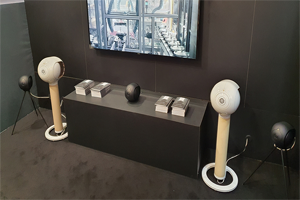
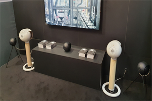
Devialet Phantom I 108 dB es un sistema de altavoces de alta calidad compatible con Bluetooth, Spotify y Airplay2. El Devialet Phantom I 108dB está diseñado con tecnología de punta para un sonido musical y envolvente. Rango fantasmal La línea Devialet Phantom I incluye dos modelos: 103 dB y 108 dB. Se diferencian en potencia y nivel de presión sonora. Son perfectos para sus altavoces principales izquierdo y derecho o si necesita más para llenar habitaciones grandes. Zoom doble para estéreo El Devialet Phantom I 108dB se puede emparejar con otro o más para una expansión sónica aún mayor y un sistema multisala. Al agregar otro altavoz a la mezcla, su sonido adquiere una dimensión completamente nueva. Aplicación Devialet Disponible para Android y Apple iOS, la aplicación Devialet puede sincronizar todo su sistema Devialet para escuchar como uno solo, además de poder reproducir audio de forma independiente en cada habitación. La aplicación Devialet también le permite ajustar los altavoces, editar la configuración, mantenerse actualizado y ajustar la latencia, entre otros controles. Capacidades de transmisión El Phantom I 108dB de Devialet tiene Bluetooth incorporado para que pueda emparejar su teléfono, tableta o computadora portátil para poder transmitir audio de forma inalámbrica. Admite aplicaciones de transmisión para que este proceso sea fluido, como Apple AirPlay 2, Spotify Connect y Roon Ready. Tecnología Devialet El Phantom I 108dB de Devialet incorpora muchas de las tecnologías avanzadas patentadas de Devialet para brindar un sonido preciso y potente. Ordenar

 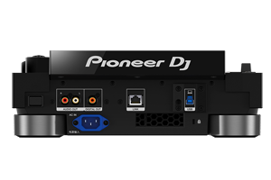
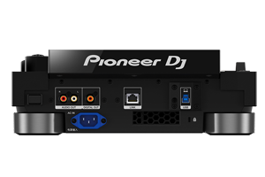

Pioneer DJ CDJ 3000 es un multi-reproductor Dj profesional que proporciona un mayor nivel de creatividad impulsado por una nueva MPU avanzada, un diseño de audio mejorado, conexión Ethernet Gigabit, pantalla táctil de alta resolución, Hot Cues rediseñados y una construcción con componentes de alta calidad especialmente desarrollados, todo en una unidad robusta repleta de características innovadoras. Este nuevo reproductor Dj de Pioneer, el más avanzado hasta la fecha, proporciona una interfaz intuitiva con un comportamiento más preciso, suave y estable, brindándote la posibilidad de manipular tu música de cualquier forma que se te ocurra. Nueva MPU avanzada Pioneer DJ CDJ 3000 integra una nueva unidad de micro-procesamiento (MPU) que habilita nuevas funciones avanzadas y ofrece un comportamiento más suave y estable influyendo, al mismo tiempo, en diferentes secciones del reproductor. Este nuevo desarrollo, además, abre la posibilidad de introducir más funciones a través de actualizaciones futuras. Gigabit Ethernet Gracias a la conexión Gigabit Ethernet para Pro DJ Link, puedes compartir y reproducir archivos de audio desde dispositivos USB y tarjetas SD en hasta seis unidades CDJ-3000 cuando se combinan con un mezclador de 6 canales como el DJM-V10. Componentes más resistentes y conexiones seguras La placa superior de aluminio de alta calidad y los botones de reproducción, cue y Hot Cue han sido rediseñados para ofrecer una mayor resistencia. Así mismo, el cable de alimentación V-Lock con cerradura protege contra desconexiones accidentales. Diseño de audio mejorado El multi-reproductor CDJ-3000 unifica el procesamiento de cálculo de audio interno a 96 kHz / 32 bits flotantes en todos los formatos de audio reproducibles. Como resultado, la unidad puede capturar todas las sutilezas de la fuente de sonido original. Pantalla táctil de alta resolución Permite realizar una vista previa táctil para escuchar cualquier parte de una pista determinada, simplemente tocando su forma de onda en el lugar relevante en la sección de exploración. El reproductor se completa con funciones avanzadas tales como Touch Cue –para escuchar una parte de la pista distinta a la que está sonando–, 3 Band Waveform –utiliza diferentes colores para indicar el volumen de cada banda de frecuencia en los archivos analizados por Rekordbox–, Key Sync y Key Shift, entre muchas otras. Además, incluye un jog wheel rediseñado para una menor latencia táctil, ocho botones Hot Cue con un posicionamiento lineal más natural para seleccionar puntos de referencia, botones de Beat Jump dedicados, una sección Advanced Auto Beat Loop que incluye un botón de bucle de 8 tiempos para más posibilidades creativas, entre otras herramientas destacadas. El sistema trabaja con tarjeta de memoria SD, dispositivos de almacenamiento USB, PC/Mac y iPhone, siendo compatible con archivos WAV, AIFF, FLAC, Apple Lossless; MP3; AAC. Pioneer DJ CDJ 3000 permite reproducir música analizada por rekordbox desde unidades USB a través del modo Exportar así como conectar un ordenador portátil con control USB-HID para usar el modo Link Export o Performance. Dado que el CDJ-3000 es un dispositivo de desbloqueo de hardware, permite utilizar el modo Performance de forma gratuita (no es necesario un plan de suscripción de pago) para poder reproducir todas las pistas de tu biblioteca de Rekordbox.
Ordenar


DJ mezclador Pioneer DJM-V10 El nuevo buque insignia de la mezcladora para DJ DJM-V10 ofrece posibilidades creativas ilimitadas para DJs individuales y presentaciones en vivo. Esta mezcladora de 6 canales va más allá del alcance de las mezcladoras estándar de club, trayendo la funcionalidad de DSP de alta gama - que normalmente sólo se encuentra en las grandes consolas de mezclas - a los DJs profesionales. Puede conectar CDJs, giradiscos y otras fuentes de audio al total de 6 entradas de línea de la DJM-V10. Cada canal tiene una detallada tira de ecualizador de 4 bandas para un control de sonido adicional. Con la opción de envío y retorno de cada canal, puede dirigir el audio a cualquiera de los cuatro módulos de efectos y a las dos unidades de efectos hardware para obtener increíbles posibilidades de remezclado en directo. También es nuevo un botón de compresor en cada canal para ajustar rápidamente el volumen de las pistas más antiguas y más nuevas. Con el nuevo Shimmer Beat FX puede añadir distorsión armónica a su mezcla. Las dos salidas de auriculares con control de nivel independiente facilitan aún más el traspaso del DJ. Asimismo, el DJ ya no necesita cambiar constantemente de auriculares cuando le toca. MULTI I/O le permite conectar aplicaciones de smartphone compatibles con su actuación para obtener aún más posibilidades creativas. El DJM-V10 es compatible con rekordbox, Traktor Pro 3 y Serato DJ. Esto le brinda total flexibilidad para elegir su configuración y su software de DJ favorito. Características Pioneer DJM-V10 Mezclador de 6 canales para DJs DSP de alta gama para la mejor calidad de sonido EQ de 4 bandas por canal Enorme sección de Envío/Retorno Salidas dobles de auriculares Nuevo filtro con perilla dedicada en cada canal Botón del compresor en cada canal La pantalla de fácil lectura muestra toda la información importante, incluso en condiciones de poca luz. Soporte para dispositivos, aplicaciones y servicios externos Salida DIN Midi - sincronice los samplers o sintetizadores externos con el BPM de rekordbox Fuente de alimentación bloqueable - Evita la desconexión accidental de la alimentación Datos técnicos Tasa de muestreo: 96 kHz Línea de relación S/N: 105 dB Convertidor A/D: 32 bit Conversor D/A: 32 bit Gama de frecuencias: 20 - 40.000 Hz Peso: 11,9 kg Dimensiones (ancho x profundidad x altura): 438 x 467 x x 108 mm
Ordenar


El tocadiscos Technics SL-1210 MK7 es un nuevo desarrollo de un modelo que se ha vuelto muy popular entre los amantes de la música y los DJ. En el modelo Technics SL-1210 MK7, por supuesto, se mantuvo el principio de diseño principal: accionamiento directo desde un motor de par de arranque alto. El accionamiento directo asegura el mantenimiento estable y preciso de la velocidad de rotación de la placa, así como la posibilidad de su suave ajuste y frenado manual (estas dos últimas circunstancias hacen que el jugador sea tan deseable para los profesionales). En el modelo Technics SL-1210 MK7, se mejoró el motor, lo que mejoró aún más sus parámetros y aumentó la confiabilidad y la estabilidad. El Technics SL-1210 MK7 presenta un brazo en forma de S estáticamente equilibrado, también un clásico para los tocadiscos de la compañía. Gracias a la mano de obra de alta precisión y al diseño cuidadoso, el brazo fonocaptor proporciona un seguimiento excelente y un sonido de alta calidad incluso en discos con una superficie imperfecta. El Technics SL-1210 MK7 cuenta con un chasis de aluminio fundido a presión masivo y no resonante con una placa de ABS en la parte inferior, que está montado en soportes combinados amortiguados: tienen una carcasa de goma y un resorte interno. Al mismo tiempo, los soportes son ajustables en altura, lo que le permite colocar Technics SL-1210 MK7 exactamente en posición horizontal, incluso en superficies irregulares. El plato del tocadiscos también es de aluminio y está recubierto de goma en la parte superior, lo que lo amortigua y también sirve como tapete para el disco. El color de la iluminación de la luz estroboscópica y los controles del reproductor se puede cambiar mediante un microinterruptor. El Technics SL-1210 MK7 cuenta con un circuito de control de tono digital con un rango de ±8% o 16% para mejorar el control de tono. El Technics SL-1210 MK7 está equipado con un interruptor de velocidad electrónico de 33, 45 o 78 rpm. También hay una práctica Target Light, que se utilizó por primera vez en el SL-1210 MK2. El uso de un LED blanco brillante para la iluminación hace que el reproductor sea fácil de usar incluso en habitaciones oscuras.
Ordenar

Sennheiser HD-25 PLUS auriculares dinámicos cerrados para DJ y uso monitor Su bajo peso y la opción poder escuchar con un oído, los auriculares HD 25 son unos auriculares indispensables para monitorización. Sennheiser HD 25 PLUS es auricular completamente cerrados, diseñados para monitoreo profesional con una alta atenuación de ruido de fondo. Maneja niveles de presión sonora muy elevados y con una construcción extremadamente robusta, se desempeñan extremadamente bien en ambientes ruidosos, como cabinas DJ, conciertos, monitoreo en estudio y pruebas de equipos de audio.Dinámicos Cerrados On-Ear Impedancia: 70 Ohmios SPL máx.: 120dB (1kHz, 1Vrms) Respuesta en frecuencia: 16 - 22000Hz Capacidad de carga: 200mW Cápsula giratoria para escucha con 1 oído Diadema dividida Tendido de cable de 1 lado Cable en espiral de 1 - 3m Jack estéreo de 3,5mm y adaptador jack de 6,3mm Peso sin cable: 140g
Ordenar


La construcción de marco tipo doble x del soporte de alta resistencia garantiza una estabilidad adicional para teclados electrónicos digitales pesados y livianos El mecanismo de liberación rápida de este soporte permite al usuario ajustar la altura, de 10 a 98 cm; en comparación con la mayoría de los otros soportes que solo permiten cinco posiciones establecidas No se necesita ensamblaje; las partes metálicas de este soporte para teclado están soldadas entre sí y no hay tornillos que perder Las correas de soporte de alta resistencia unidas al soporte del teclado aseguran el teclado del movimiento que puede haber durante la interpretación Las tapas de goma antideslizantes agregan estabilidad adicional a este soporte.
Ordenar 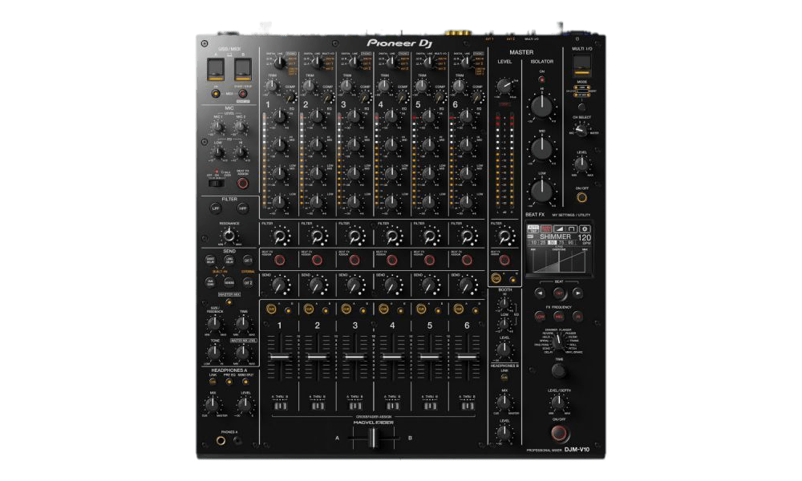
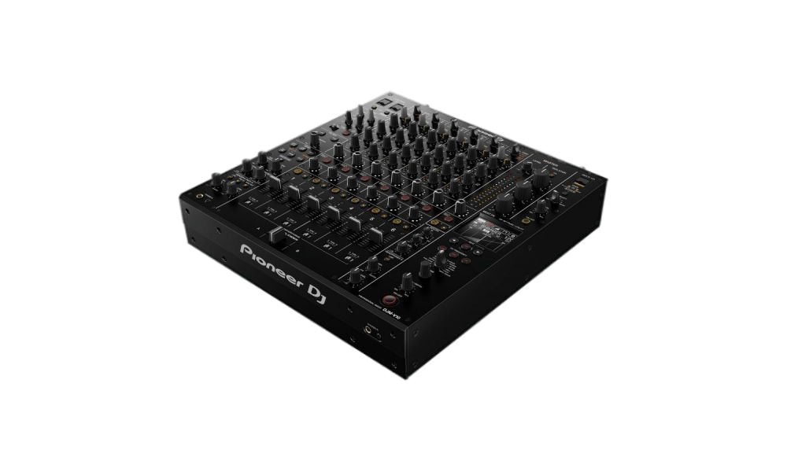
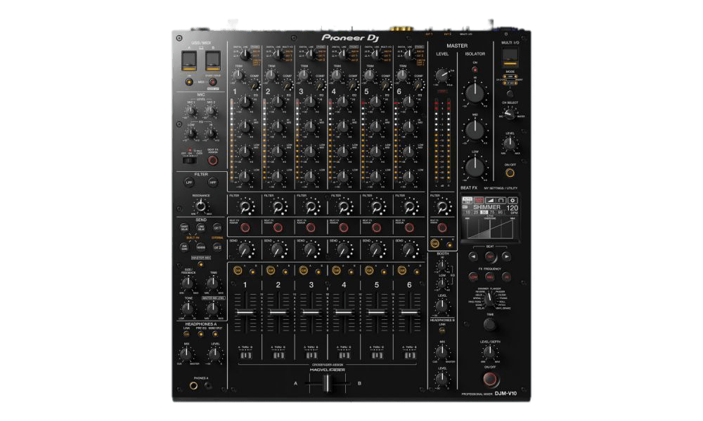
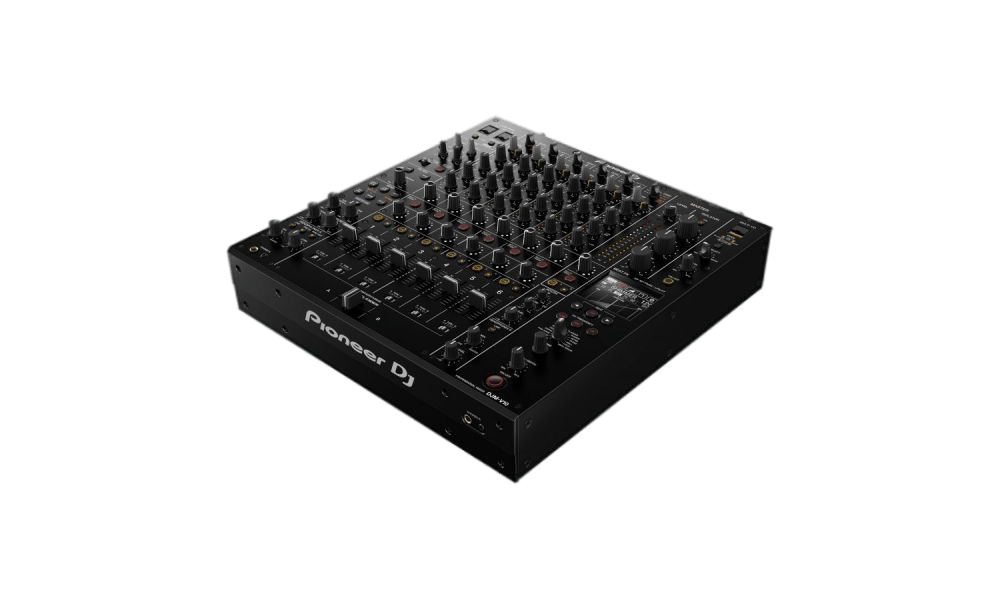

DJ mezclador Pioneer DJM-V10 El nuevo buque insignia de la mezcladora para DJ DJM-V10 ofrece posibilidades creativas ilimitadas para DJs individuales y presentaciones en vivo. Esta mezcladora de 6 canales va más allá del alcance de las mezcladoras estándar de club, trayendo la funcionalidad de DSP de alta gama - que normalmente sólo se encuentra en las grandes consolas de mezclas - a los DJs profesionales. Puede conectar CDJs, giradiscos y otras fuentes de audio al total de 6 entradas de línea de la DJM-V10. Cada canal tiene una detallada tira de ecualizador de 4 bandas para un control de sonido adicional. Con la opción de envío y retorno de cada canal, puede dirigir el audio a cualquiera de los cuatro módulos de efectos y a las dos unidades de efectos hardware para obtener increíbles posibilidades de remezclado en directo. También es nuevo un botón de compresor en cada canal para ajustar rápidamente el volumen de las pistas más antiguas y más nuevas. Con el nuevo Shimmer Beat FX puede añadir distorsión armónica a su mezcla. Las dos salidas de auriculares con control de nivel independiente facilitan aún más el traspaso del DJ. Asimismo, el DJ ya no necesita cambiar constantemente de auriculares cuando le toca. MULTI I/O le permite conectar aplicaciones de smartphone compatibles con su actuación para obtener aún más posibilidades creativas. El DJM-V10 es compatible con rekordbox, Traktor Pro 3 y Serato DJ. Esto le brinda total flexibilidad para elegir su configuración y su software de DJ favorito. Características Pioneer DJM-V10 Mezclador de 6 canales para DJs DSP de alta gama para la mejor calidad de sonido EQ de 4 bandas por canal Enorme sección de Envío/Retorno Salidas dobles de auriculares Nuevo filtro con perilla dedicada en cada canal Botón del compresor en cada canal La pantalla de fácil lectura muestra toda la información importante, incluso en condiciones de poca luz. Soporte para dispositivos, aplicaciones y servicios externos Salida DIN Midi - sincronice los samplers o sintetizadores externos con el BPM de rekordbox Fuente de alimentación bloqueable - Evita la desconexión accidental de la alimentación Datos técnicos Tasa de muestreo: 96 kHz Línea de relación S/N: 105 dB Convertidor A/D: 32 bit Conversor D/A: 32 bit Gama de frecuencias: 20 - 40.000 Hz Peso: 11,9 kg Dimensiones (ancho x profundidad x altura): 438 x 467 x x 108 mm. Pioneer DJ CDJ 3000 es un multi-reproductor Dj profesional que proporciona un mayor nivel de creatividad impulsado por una nueva MPU avanzada, un diseño de audio mejorado, conexión Ethernet Gigabit, pantalla táctil de alta resolución, Hot Cues rediseñados y una construcción con componentes de alta calidad especialmente desarrollados, todo en una unidad robusta repleta de características innovadoras. Este nuevo reproductor Dj de Pioneer, el más avanzado hasta la fecha, proporciona una interfaz intuitiva con un comportamiento más preciso, suave y estable, brindándote la posibilidad de manipular tu música de cualquier forma que se te ocurra. Nueva MPU avanzada Pioneer DJ CDJ 3000 integra una nueva unidad de micro-procesamiento (MPU) que habilita nuevas funciones avanzadas y ofrece un comportamiento más suave y estable influyendo, al mismo tiempo, en diferentes secciones del reproductor. Este nuevo desarrollo, además, abre la posibilidad de introducir más funciones a través de actualizaciones futuras. Gigabit Ethernet Gracias a la conexión Gigabit Ethernet para Pro DJ Link, puedes compartir y reproducir archivos de audio desde dispositivos USB y tarjetas SD en hasta seis unidades CDJ-3000 cuando se combinan con un mezclador de 6 canales como el DJM-V10. Componentes más resistentes y conexiones seguras La placa superior de aluminio de alta calidad y los botones de reproducción, cue y Hot Cue han sido rediseñados para ofrecer una mayor resistencia. Así mismo, el cable de alimentación V-Lock con cerradura protege contra desconexiones accidentales. Diseño de audio mejorado El multi-reproductor CDJ-3000 unifica el procesamiento de cálculo de audio interno a 96 kHz / 32 bits flotantes en todos los formatos de audio reproducibles. Como resultado, la unidad puede capturar todas las sutilezas de la fuente de sonido original. Pantalla táctil de alta resolución Permite realizar una vista previa táctil para escuchar cualquier parte de una pista determinada, simplemente tocando su forma de onda en el lugar relevante en la sección de exploración. El reproductor se completa con funciones avanzadas tales como Touch Cue –para escuchar una parte de la pista distinta a la que está sonando–, 3 Band Waveform –utiliza diferentes colores para indicar el volumen de cada banda de frecuencia en los archivos analizados por Rekordbox–, Key Sync y Key Shift, entre muchas otras. Además, incluye un jog wheel rediseñado para una menor latencia táctil, ocho botones Hot Cue con un posicionamiento lineal más natural para seleccionar puntos de referencia, botones de Beat Jump dedicados, una sección Advanced Auto Beat Loop que incluye un botón de bucle de 8 tiempos para más posibilidades creativas, entre otras herramientas destacadas. El sistema trabaja con tarjeta de memoria SD, dispositivos de almacenamiento USB, PC/Mac y iPhone, siendo compatible con archivos WAV, AIFF, FLAC, Apple Lossless; MP3; AAC. Pioneer DJ CDJ 3000 permite reproducir música analizada por rekordbox desde unidades USB a través del modo Exportar así como conectar un ordenador portátil con control USB-HID para usar el modo Link Export o Performance. Dado que el CDJ-3000 es un dispositivo de desbloqueo de hardware, permite utilizar el modo Performance de forma gratuita (no es necesario un plan de suscripción de pago) para poder reproducir todas las pistas de tu biblioteca de Rekordbox.
Ordenar